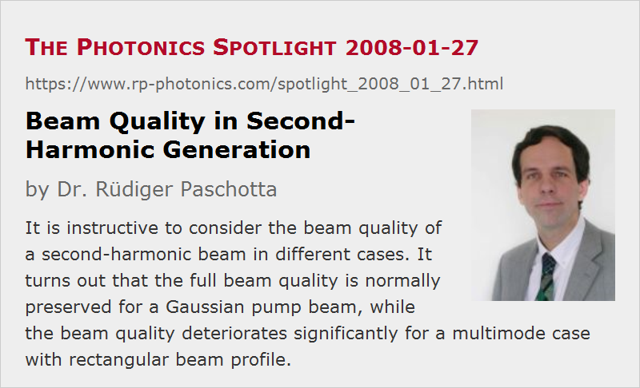

Beam Quality in Second-Harmonic Generation
Posted on 2008-01-27 as a part of the Photonics Spotlight (available as e-mail newsletter!)
Permanent link: https://www.rp-photonics.com/spotlight_2008_01_27.html
Author: Dr. Rüdiger Paschotta, RP Photonics Consulting GmbH
Abstract: It is instructive to consider the beam quality of a second-harmonic beam in different cases. It turns out that the full beam quality is normally preserved for a Gaussian pump beam, while the beam quality deteriorates significantly for a multimode case with rectangular beam profile.

Ref.: encyclopedia article on frequency doubling and beam quality; The Photonics Spotlight 2007-10-17
A question from a colleague triggered me to discuss the relation between beam quality of a pump beam and the frequency-doubled beam generated in a nonlinear crystal, as this has some instructive aspects. I distinguish two different cases:
Frequency Doubling with Gaussian Beams
When the pump beam is a Gaussian beam, the second-harmonic beam will have a somewhat reduced beam radius, as explained in the Photonics Spotlight of 2007-10-17. Essentially this is because the nonlinear polarization, which is proportional to the square of the pump amplitude, is narrower than the pump. Due to the smaller beam radius at all locations, the beam divergence is also reduced. If there is weak pump depletion and no spatial walk-off, and the focusing is not very strong, the beam area in the focus will be half that of the pump beam, and the divergence will be smaller by a factor square root of two. The beam parameter product is thus maintained, and the M2 factor remains unity.
With some spatial walk-off, the second-harmonic beam becomes wider, but the divergence angle is also reduced. Therefore, the beam quality does not need to be any worse.
The Multimode Case
For simplicity, we assume an approximately rectangular pump beam shape with many modes involved. In that case, we cannot expect that the frequency-doubled beam will be narrower. Its divergence will also be similar to that of the pump beam, so the beam parameter product will be similar, despite the doubled frequency. Therefore, the M2 factor will be approximately doubled.
It may be surprising that the beam quality in terms of M2 is degraded in that case, while it is preserved in the case of a Gaussian pump beam. This can be understood by considering the involved propagation modes. Every mode of the pump field will generate a corresponding frequency-doubled mode. In addition, sum frequency generation will generate modes with intermediate frequencies. In effect, the total number of modes in the second-harmonic field (considering just one dimension) is about doubled, and this explains the doubled M2 factor.
This article is a posting of the Photonics Spotlight, authored by Dr. Rüdiger Paschotta. You may link to this page and cite it, because its location is permanent. See also the RP Photonics Encyclopedia.
Note that you can also receive the articles in the form of a newsletter or with an RSS feed.
Questions and Comments from Users
Here you can submit questions and comments. As far as they get accepted by the author, they will appear above this paragraph together with the author’s answer. The author will decide on acceptance based on certain criteria. Essentially, the issue must be of sufficiently broad interest.
Please do not enter personal data here; we would otherwise delete it soon. (See also our privacy declaration.) If you wish to receive personal feedback or consultancy from the author, please contact him e.g. via e-mail.
By submitting the information, you give your consent to the potential publication of your inputs on our website according to our rules. (If you later retract your consent, we will delete those inputs.) As your inputs are first reviewed by the author, they may be published with some delay.
|  |
If you like this page, please share the link with your friends and colleagues, e.g. via social media:
These sharing buttons are implemented in a privacy-friendly way!